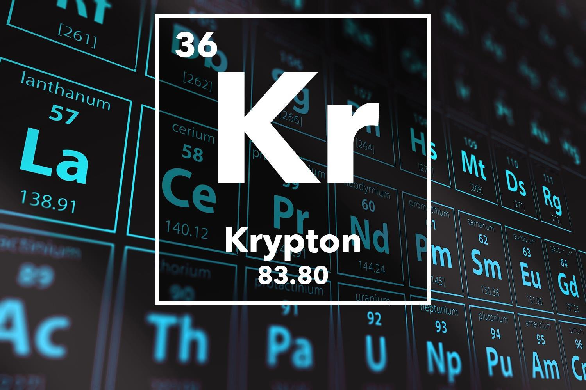

KRYPTON

Appearance of Krypton:
colorless gas, exhibiting a whitish glow in an electric field
Standard atomic weight:
Ar°(Kr)
83.798±0.002
83.798±0.002 (abridged)
Krypton in the periodic table:
Atomic number (Z): 36
Group group: 18 (noble gases)
Period period: 4
Block: p-block
Electron configuration: [Ar] 3d10 4s2 4p6
Electrons per shell: 2, 8, 18, 8
Physical properties of Krypton:
Phase at STP: gas
Melting point: 115.78 K (−157.37 °C, −251.27 °F)
Boiling point: 119.93 K (−153.415 °C, −244.147 °F)
Density (at STP): 3.749 g/L
when liquid (at b.p.): 2.413 g/cm3
Triple point: 115.775 K, 73.53 kPa
Critical point: 209.48 K, 5.525 MPa
Heat of fusion: 1.64 kJ/mol
Heat of vaporization: 9.08 kJ/mol
Molar heat capacity: 20.95 J/(mol·K)
Chemical properties of Krypton:
Oxidation states: 0, +1, +2 (rarely more than 0; oxide is unknown)
Electronegativity: Pauling scale: 3.00
Ionization energies:
1st: 1350.8 kJ/mol
2nd: 2350.4 kJ/mol
3rd: 3565 kJ/mol
Covalent radius: 116±4 pm
Van der Waals radius: 202 pm
Other properties of Krypton:
Natural occurrence: primordial
Crystal structure: face-centered cubic (fcc)Face-centered cubic crystal structure for krypton
Speed of sound: (gas, 20 °C) 221 m·s−1
(liquid) 1120 m/s
Thermal conductivity: 9.43×10−3 W/(m⋅K)
Magnetic ordering: diamagnetic
Molar magnetic susceptibility : −28.8×10−6 cm3/mol (298 K)
CAS Number: 7439-90-9
History:
Discovery and first isolation: William Ramsay and Morris Travers (1898)
Uses of Krypton:
Applications:
Krypton gas discharge tube
Krypton's multiple emission lines make ionized krypton gas discharges appear whitish,
which in turn makes krypton-based bulbs useful in photography as a white light source.
Krypton is used in some photographic flashes for high speed photography. Krypton gas is also combined with mercury to make luminous signs that glow with a bright greenish-blue light.
Krypton is mixed with argon in energy efficient fluorescent lamps, reducing the power consumption, but also reducing the light output and raising the cost.
Krypton costs about 100 times as much as argon. Krypton (along with xenon) is also used to fill incandescent lamps to reduce filament evaporation and allow higher operating temperatures.
Krypton's white discharge is sometimes used as an artistic effect in gas discharge "neon" tubes.
Krypton produces much higher light power than neon in the red spectral line region, and for this reason, red lasers for high-power laser light-shows are often krypton lasers
with mirrors that select the red spectral line for laser amplification and emission, rather than the more familiar helium-neon variety, which could not achieve the same multi-watt outputs.
The krypton fluoride laser is important in nuclear fusion energy research in confinement experiments.
The laser has high beam uniformity, short wavelength, and the spot size can be varied to track an imploding pellet.
In experimental particle physics, liquid krypton is used to construct quasi-homogeneous electromagnetic calorimeters.
A notable example is the calorimeter of the NA48 experiment at CERN containing about 27 tonnes of liquid krypton.
This usage is rare, since liquid argon is less expensive. The advantage of krypton is a smaller Molière radius of 4.7 cm,
which provides excellent spatial resolution with little overlapping. The other parameters relevant for calorimetry are: radiation length of X0=4.7 cm, and density of 2.4 g/cm3.
Krypton-83 has application in magnetic resonance imaging (MRI) for imaging airways. In particular,
it enables the radiologist to distinguish between hydrophobic and hydrophilic surfaces containing an airway.
Although xenon has potential for use in computed tomography (CT) to assess regional ventilation,
its anesthetic properties limit its fraction in the breathing gas to 35%. A breathing mixture of 30% xenon and 30% krypton is comparable in effectiveness for
CT to a 40% xenon fraction, while avoiding the unwanted effects of a high partial pressure of xenon gas. The metastable isotope krypton-81m is used in nuclear medicine for
lung ventilation/perfusion scans, where it is inhaled and imaged with a gamma camera. Krypton-85 in the atmosphere has been used to detect clandestine nuclear fuel reprocessing facilities in
North Korea and Pakistan. Those facilities were detected in the early 2000s and were believed to be producing weapons-grade plutonium. Krypton-85 is a medium lived fission product and thus
escapes from spent fuel when the cladding is removed.
Krypton is used occasionally as an insulating gas between window panes. SpaceX Starlink uses krypton as a propellant for their electric propulsion system.